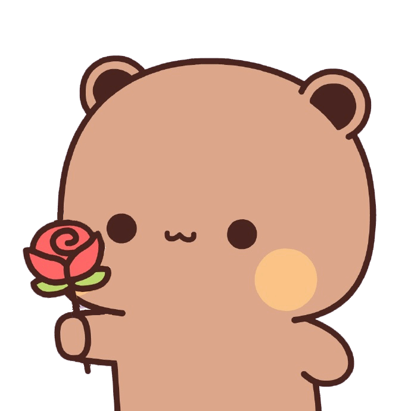
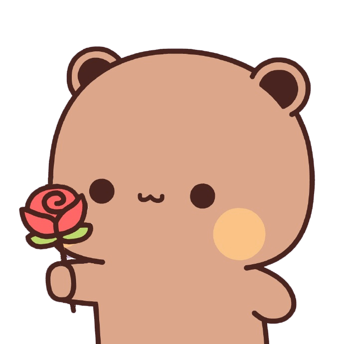

Sentuh LOVEnya!

 

hai padok. it's me, Harris! pasien nomor #1 kamu dan tentunya ur biggest fan
kiw cantik. saya sampai sekarang masih heran kenapa bisa ada makhluk seindah kamu?
ah iya, kamu setengah malaikat ya makanya unreal begitu? sebenarnya saya ga heran lag
tapi tujuan saya kirim ini bukan hanya untuk memuji keindahan kamu yang tiada bandingnya itu
i don’t know exactly when it started. but somewhere along the way, i realized that i really love u, Navia. i love u and i really do.
sepertinya kamu juga sudah tau ya? karena saya juga sering bilang hahaha
u make everything feel lighter, more meaningful, and honestly, i feel happiest when i'm with u
i love everything about u. i love ur pretty smile, ur pretty eyes, and every part of u
Navia, terima kasih karena sudah percaya saya ya. saya merasa beruntung bisa kenal kamu
saya ga mau bikin kamu menunggu lebih lama lagi. so, will u be mine?
Klik untuk Geser!
saya sering berpikir tentang bagaimana semesta bekerja, dan tentang bagaimana di antara begitu banyak pertemuan yang mungkin tak pernah terjadi, saya justru dipertemukan dengan kamu. rasanya seperti keajaiban kecil yang datang tanpa aba-aba. sejak saya mengenal kamu, hari-hari saya terasa lebih hangat, lebih berarti, dan lebih hidup. saya merasa sangat beruntung, karena di dunia yang begitu luas ini, saya diberi kesempatan untuk mengenal seseorang seistimewa kamu.
i love u so bad, Navia.